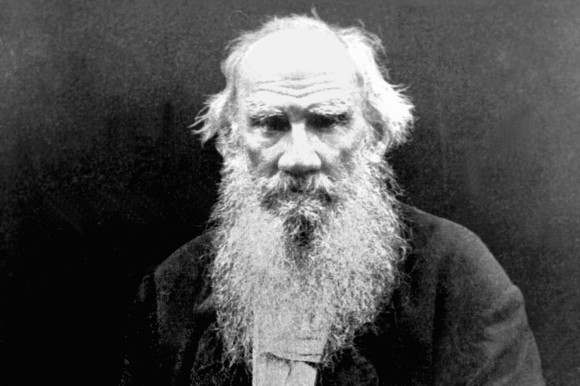

Leo Tolstoy - Russian author, a master of realistic fiction and one of the world's greatest novelists.
1828: Tolstoy is born Leo Tolstoy is born August 28,1828 at his family's estate known as Yasnaya Polyana
1830: Mother dies Their aunt becomes the head mother figure of the house
1835: The Green Stick Tolstoy's older brother Nikolai tells an impressionable Tolstoy he has written the secret that will make all men happy on a green stick and buried by the ravine in the Kakaz forest.
1837: Father dies He passes away on June 21st leaving the eldest daughter as the legal guardian.
1844: Formal education begins Tolstoy enters the University of Kazan but is a poor student. This same year his brothers take him to a brothol where he loses his virginity. This has a profound impact on him.
1847: Leaves the university Without a degree Tolstoy leaves the University. He inherits the 4,000 acre estate of Yasnaya Polyana and begins to keep a journal. This same year he moves to Moscow and becomes obsessed with gambling.
1849: Moves to St. Petersburg Tolstoy moves to St. Petersburg to take his law exams but runs up a huge gambling debts. He sells some of his estate to cover the cost.
1850: Returns to Moscow His gambling debts continue to grow forcing him to log his forests and pawn his watch. He is unable to live the virtuous life he wants and spends many nights drinking and gambling.
1852: Joins the army Enlisted in the army he is transferred with his brother to the Caucuses. He begins to write Childhood.
1854: Writes Boyhood The army transfers him to Sevastopol.
1856: His brother dies Demitry dies of tuberculosis. Tolstoy tries to free his serfs and transfer the land they work. Suspicious they refuse the offer.
1859: Opens a school At Yasnaya Polyana he creates a school founded on his own pedagogical ideas. Has a relationship with a married peasant who bears him a son, Timothy.
1862: Marries Sophia Behrs Tolstoy falls in love with Sonya, age 17. Much of their courtship is reflected in Levin and Kitty's relationship in Anna Karenina.
1863: His Son is born His first son from Sonya is born in June. He begins writing War and Peace.
1864: His Daughter is born Tanya, his first daughter, is born.
1866: Another son Ilya is born.
1869: Third son His third son, second from Sonya, is named Leo. Finishes War and Peace, six years after he began it.
1871: Second Daughter The Tolstoy's second daughter and fifth child is named Marya
1872: Fourth Son Petya is born but will die 18 months later.
1873: Begins writing Anna Karenina
1874: Fifth Son is born Nicholas is born in June but dies the following year.
1875: Third daughter Sonya gives birth to their 8th child prematurely who does not survive.
1877: 6th Son Andrey is born. Finishes Anna Karenina.
1878: Converts to Christianity At age 50 Tolstoy is finally able to resolve a significant internal conflict and accepts christianity. Most scholars divide his life into pre and post conversion.
1881: 7th Son Alexis is born.
1883: Sonya given power of attorney To prevent Sonya from leaving she is given power of attorney. Tolstoy meets and forms a close bond with Chertkov, an officer in the army, who becomes Sonya's main rival.
1884: Alexandra is born She becomes the 11 child and 3rd daughter.
1886: Alexis dies Sonya and Leo burry their fourth child.
1888: Ivan is born This makes him the 8th son and 12th, and last, child.
1891: Renounces his copyrights Tolstoy declares he will give all his possessions to his serfs. After his sons and Sonya object he agrees to leave the estate to the family.
1895: Ivan dies
1901: Excommunicated from the Russian Orthodox Church After writing Resurrection the church excommunicates Tolstoy. He writes his own religious model and others follow.
1902: Warns of civil war Writes a letter to the Tsar warning him of civil war unless the tsar grant Russia it's freedom.
1907: Chertkov returns from exile Having been exiled 10 years earlier Tolstoy and Chertkov resume their friendship. Tolstoy grants him increasingly more editorial privileges. Sonya and Chertkov remain enemies.
1908: Writes a will Tolstoy writes a will relinquishing all copyrights.
1909: "Chertkov's" will Behind Sonya's back Chertkov writes a new will for Tolstoy. This will gives Chertkov rights to Tolstoy's works and diaries.
1910: Leo Tolstoy dies Escaping his wife by train Tolstoy falls ill forcing him to stop in a small town named Astapovo. A few days latter he passes away. He is buried, as requested, by the "green stick" his brother told him about in his childhood.
«Когда в литературе есть Толстой, то легко и приятно быть литератором, так как Толстой делает за всех. Его деятельность служит оправданием тех упований и чаяний, какие на литературу возлагаются, < > пока он жив, дурные вкусы в литературе, всякое пошлячество, < > озлобленные самолюбия будут далеко в тени. Только один его нравственный авторитет способен держать на известной высоте так называемые литературные течения и настроения». А.П. Чехов
If you have time, you should read more about this incredible human being on his Wikipedia entry.